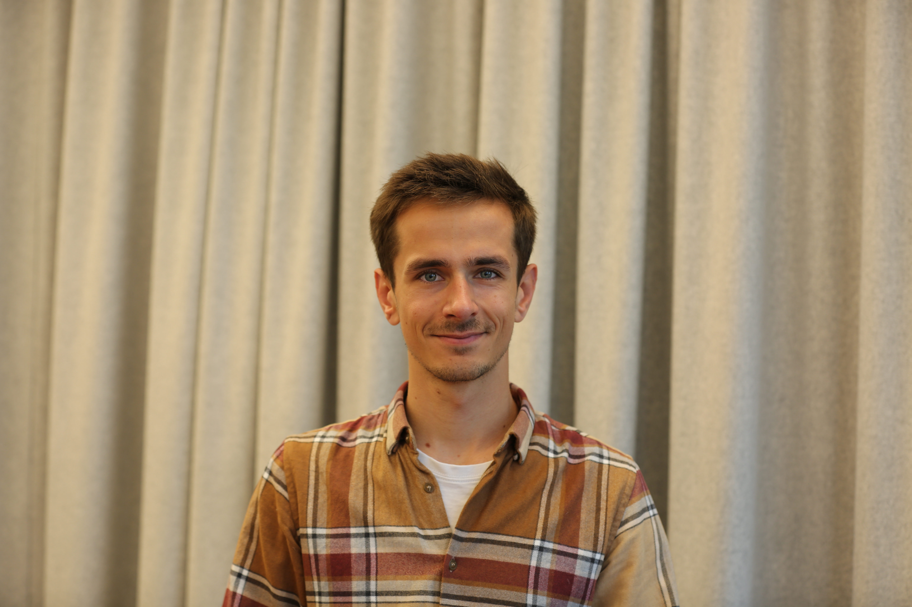

I am a PhD student at the Climate Policy Group at ETH Zürich, which I joined in 2023. My research focuses on the decarbonisation of energy systems, looking at both how to integrate higher shares of renewables into the power system and how to electrify heat and transport demand. Flexibility and sector coupling are central themes in my work.
I combine large-scale energy systems models, agent-based models, and life-cycle analysis. I care about making research transparent and reproducible, which is why I published Swiss-Calliope, an open-source sector-coupled energy model of Switzerland.
Before starting my PhD, I completed a Master's in energy science at ETH Zürich and an undergraduate degree in mathematics and physics at École Polytechnique in Paris and EPFL.
📝 Publications
Electrification, flexibility or both? Emerging trends in European energy policy
Energy Policy 206, 114725, 2025
Exploratory analysis of direct load control policies for heat pumps in the future Swiss electricity system
21st International Conference on the European Energy Market (EEM), 2025
Nature and the insurance industry: taking action towards a nature-positive economy
Geneva Association, 2022
Other
Flexibility provision from electromobility and buildings — Synthesis Report (PATHFNDR consortium)
ETH Zurich, 2025
Bridging the gap: How Switzerland can reinforce its winter electricity supply
ETH Energy Blog, 2024
🔥 News
- March – June 2026 — Currently visiting Jessica Jewell's group at Chalmers University, exploring policy-driven climate action and climate policy assessment.
- 2026 — SWEET PATHFNDR lunch talk on "Electrification, flexibility — or both? What emerging Swiss & EU policy trends tell us." (recording, slides)
- 2025 — Paper on electrification and flexibility in European energy policy published in Energy Policy.
- 2025 — Attended the 21st International Conference on the European Energy Market (EEM) in Lisboa, Portugal, and presented our paper on the effect of direct load control regulations for heat pumps.
- 2024 — Presented at the SWEET PATHFNDR conference during ETH Energy Week.
- 2024 — Paper on mitigating winter electricity deficits published in Energy Conversion and Management.
- 2024 — Released Swiss-Calliope pre-built model on Zenodo.
- 2024 — Blog post on winter electricity supply in Switzerland published on ETH Energy Blog.
- 2023 — Started PhD at ETH Zürich, Climate Policy Group.
👩🎓 Supervision
I regularly supervise students on topics related to energy systems modelling, sector coupling, flexibility, decarbonisation policies, and LCA of energy systems. Feel free to reach out!
Current
- Jimmy Kochuparampil (MSc Thesis, 2026): "The Environmental Impact of Energy System Scenarios for Europe in 2050"
Past students
- Anna Schnarwyler (BSc Thesis, 2025): "Could golf courses power sustainable aviation?"
- Annina Wiher (MSc Thesis, 2024–2025): "Analyzing the Environmental Benefits and Impacts of the Swiss Energy Transition"
- Jan Linder (MSc Thesis, 2023–2024): "Buildings' Flexibility in the Future Swiss Electricity System: An Analysis of Direct Load Control Policies for Heat Pumps"
- Niccolò Moro (MSc Thesis, 2023–2024): "Smart Charging and Vehicle-to-Grid in the Swiss Electricity System: Policy Review and Modeling of Dynamic Tariffs"
🎤 Talks
- SWEET PATHFNDR lunch talk: "Electrification, flexibility — or both? What emerging Swiss & EU policy trends tell us", 2026 (recording, slides)
- Oral presentation at 21st International Conference on the European Energy Market (EEM), 2025
- Presentation at the SWEET PATHFNDR conference during ETH Energy Week on policies for electrification and flexible operation of energy demand, 2024